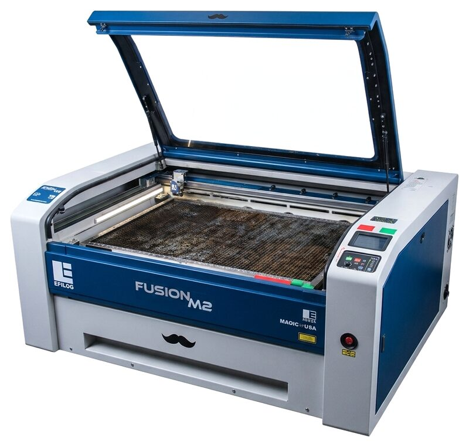

ATLAS | BTU Lab
ATLAS | BTU Lab
Lasers!

Laser equipment and materials are labeled RED!!!
Faculty:Class assignments requiring laser cutting should be facilitated by LAs or TAs, or instructors.
STUDENTS: Assistance with laser cutting for class assignments should be facilitated by class LAs or TAs first, then "Lazor Wizards", if available.
EVERYBODY: *Laser cutter access is separate from general BTU access and REQUIRES AN ORIENTATION.*
Laser Cutter Orientations
The Laser Cutter Orientation schedule can be found on the BTU Lab Calendar.
Anyone can gain access to operate the laser cutter using the process described below.
Prior to that, schedule a time to complete your laser cutting job with one of the Lazor Wizards listed below, and on the BTU Mischief Makers page.
Equipment & Materials
Laser Cutters
- 75 Watt CO2 Laser, 30" x 18" bed size [762mm x 457mm]
- 75 Watt CO2 Laser, 40" x 28" bed size[1016mm x 711mm]
Materials
- Various Plywood
- Various Plastics
- Various Cardboard / Papers
- Various Fabrics
Gaining Full Independent Access
- Complete the laser cutter orientation linked on the BTU Lab Calendar.
- Class assignments, where you need assistance, are facilitated by LAs, TAs, and instructors first, then "Lazor Wizards", if available. (See below).
- As long as you need assistance, schedule laser appointments with a BTU Lazor Wizard listed below and on the BTU Mischief Makers page.
- Lazor Wizards provide "guided access". We will help you as much, or as little as needed.
- When you demonstrate independent and proper use of the laser cutter, you will have full access.
- Block 1-hour times on the whiteboard next to each laser. (Not during scheduled orientations.)
BTU Lazor Wizards
Email all Lazor Wizards:
Subject must say: "Lazor Wizards"
Copy/Paste these addresses:
Wood Shop Policies
FOR YOUR SAFETY, major equipment including table saw, band saw, belt sander, chop saw, and drill press are powered off between the hours of 10pm and 6am, daily. Tampering with the timers is considered a serious safety violation.
Violation of any wood shop policy will result in loss of access to BTU Lab and the wood shop until both orientations are repeated.
- Use of the wood shop requires an orientation from BTU Lab staff.
- Following the orientation, you may use the wood shop under the following conditions:
- Observe all safety rules without exception.
- Do not work alone when no one could hear you if you needed assistance. Stay in earshot.
- Do not operate any tool that you are unfamiliar with. Get assistance.
- Do not alter any machine in a permanent way.
- Do not remove any tools from the wood shop or BTU Lab without staff approval.
- Do not attempt to repair a malfunctioning tool.
- Report malfunctioning tools. It is okay when a tool breaks under normal circumstances. A malfunctioning machine can be dangerous if a problem isn't understood. We just want to know what happened to prevent any possible harm.
- BTU Staff reserve the right to revoke wood shop access for any reason deemed necessary.
- Deadlines, fatigue, and other lack of preparation do not justify ignoring any wood shop policy.
- Multiple violations of wood shop policy, by one or more individuals, will result in reduced access for everyone including locking out machines or the entire space when staff are not available.
Materials
Make sure to reference the .